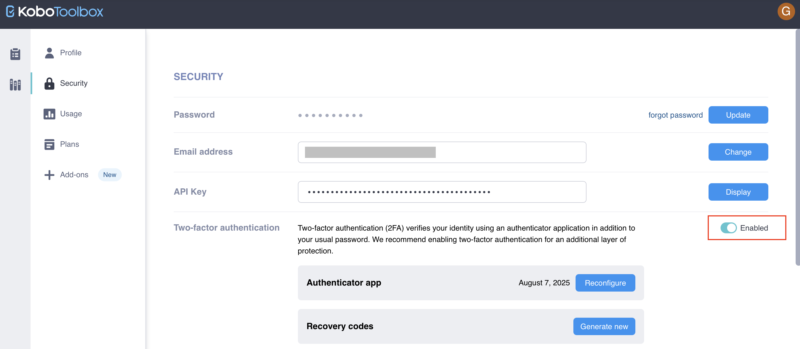

Search the knowledge base, browse our resources, and visit our forum for more detailed information
Read in English | Lire en français | اقرأ باللغة العربية Última actualización: 5 Sep 2025
KoboToolbox admite la Autenticación de Dos Factores (2FA) para mejorar la seguridad de la cuenta. Con 2FA, necesitarás ingresar la contraseña de tu cuenta y un código de una aplicación de smartphone para acceder a tu cuenta de KoboToolbox.
2FA minimiza los riesgos de una contraseña comprometida. Incluso si tu contraseña es hackeada, obtenida mediante phishing o adivinada, 2FA previene el acceso no autorizado a tu cuenta al agregar una capa adicional de seguridad más allá de la Autenticación de Un Solo Factor (SFA).
Nota: Se requiere una aplicación de autenticación compatible en tu dispositivo móvil para configurar 2FA para tu cuenta de KoboToolbox. Este artículo utiliza Google Authenticator, disponible en Google Play Store y Apple App Store, pero otras aplicaciones de autenticación también pueden funcionar.
Este artículo cubre los siguientes temas:
Configurar 2FA con un código QR o clave manual
Desactivar y reconfigurar 2FA
Usar KoboCollect cuando 2FA está habilitado
2FA en KoboToolbox se puede configurar utilizando dos enfoques diferentes: el enfoque de código QR y el enfoque de clave manual. Para comenzar con cualquiera de los dos enfoques:
Inicia sesión en tu cuenta de KoboToolbox.
Haz clic en el ícono de tu perfil en la esquina superior derecha.
Selecciona CONFIGURACIÓN DE LA CUENTA.
Ve a la pestaña Seguridad.
En la sección de Autenticación de dos factores, habilita 2FA alternando el botón Deshabilitado.
Abre tu aplicación de autenticación y sigue los pasos para uno de los dos enfoques a continuación.
El primer método es el enfoque de código QR, que utiliza la cámara de tu dispositivo para escanear un código QR y configurar 2FA para tu cuenta.
Nota: Los pasos a continuación describen el proceso utilizando la aplicación Google Authenticator. El proceso debería ser similar con otras aplicaciones de autenticación, pero puede haber algunas diferencias.
Para configurar 2FA con un código QR:
Abre tu aplicación de autenticación y presiona Comenzar.
Selecciona Escanear un código QR. La cámara de tu dispositivo ahora debería estar activa.
Escanea el código QR visible en tu monitor.
Ingresa el PIN de 6 dígitos de la aplicación de autenticación en tu cuenta de KoboToolbox para configurar 2FA, luego presiona Siguiente.
Se mostrarán códigos de recuperación para ayudarte a acceder a tu cuenta si tu aplicación de autenticación falla. Descarga los códigos seleccionando Descargar códigos y guárdalos en un lugar seguro.
Continúa seleccionando Guardé mis códigos.
Ahora has configurado exitosamente 2FA en tu cuenta de KoboToolbox a través del enfoque de código QR.
El segundo enfoque es el enfoque de clave manual, que no requiere la cámara de tu dispositivo para configurar 2FA para tu cuenta de KoboToolbox.
Para configurar 2FA con una clave manual:
En la parte inferior de la ventana de 2FA en KoboToolbox, haz clic en ¿No tienes código QR? Ingresa la clave manualmente. Se mostrará una clave de 32 caracteres.
Abre tu aplicación de autenticación y presiona Comenzar.
Selecciona Ingresar una clave de configuración.
Ingresa el nombre de la cuenta (por ejemplo, «KoboToolbox») y la clave de 32 caracteres en la aplicación, luego presiona Agregar.
Ingresa el PIN de 6 dígitos de tu aplicación de autenticación en tu cuenta de KoboToolbox para configurar 2FA, luego presiona Siguiente.
Se mostrarán códigos de recuperación para ayudarte a acceder a tu cuenta si tu aplicación de autenticación falla. Descarga los códigos seleccionando Descargar códigos y guárdalos en un lugar seguro.
Continúa seleccionando Guardé mis códigos.
Ahora has configurado exitosamente 2FA en tu cuenta de KoboToolbox a través del enfoque de clave manual.
Para desactivar 2FA de tu cuenta de KoboToolbox:
Haz clic en el ícono de tu perfil en la esquina superior derecha.
Selecciona CONFIGURACIÓN DE LA CUENTA.
Ve a la pestaña Seguridad.
En la sección de Autenticación de dos factores, desactiva 2FA alternando el botón Habilitado.
Abre la aplicación de autenticación en tu smartphone, obtén el código de 6 dígitos e ingrésalo. Presiona Siguiente.
Después de ingresar el código de 6 dígitos, el sistema desactivará 2FA de tu cuenta.

Para reconfigurar 2FA para tu cuenta de KoboToolbox (por ejemplo, para configurar un nuevo smartphone):
Haz clic en el ícono de tu perfil en la esquina superior derecha.
Selecciona CONFIGURACIÓN DE LA CUENTA.
Ve a la pestaña Seguridad.
En la sección de Autenticación de dos factores, junto a Aplicación de autenticación, presiona el botón Reconfigurar para comenzar a reconfigurar 2FA. Este proceso sigue los mismos pasos que configurar 2FA.
Cuando reconfigures 2FA para tu cuenta, la configuración anterior se eliminará automáticamente. Cualquier token o código de recuperación de la configuración anterior ya no será válido. Después de que tu 2FA actual haya sido desactivado, se te pedirá que lo configures nuevamente. Si no puedes completar el proceso, 2FA permanecerá deshabilitado para tu cuenta. En este caso, puedes habilitarlo nuevamente en cualquier momento a través del proceso habitual, como se compartió anteriormente.
La autenticación de dos factores agrega una capa de protección a las cuentas con datos sensibles. Usar estas cuentas para la recolección de datos podría representar riesgos significativos. Por lo tanto, al activar 2FA para tu cuenta, ya no puedes descargar formularios ni enviar datos a KoboCollect desde esta cuenta. Recibirás un mensaje de error al intentar descargar nuevos formularios dentro de la aplicación, como «El servidor requiere autenticación: Nombre de usuario o contraseña no válidos para el servidor».
Para recolectar datos con KoboCollect cuando 2FA está activo, recomendamos cualquiera de los siguientes enfoques:
Crea una cuenta de KoboToolbox separada para la recolección de datos y pruebas de formularios para usar con KoboCollect. Comparte tu(s) formulario(s) con esta nueva cuenta y restringe sus permisos a Agregar envíos para máxima seguridad.
Habilita «Permitir envíos a este formulario sin nombre de usuario y contraseña» para tus formularios, y conéctate a KoboCollect usando las siguientes credenciales:
URL: https://[kobocollect_url]/[username]
Nombre de usuario: (en blanco)
Contraseña: (en blanco)
El segundo enfoque permite a los/as usuarios/as descargar y enviar datos a cualquier formulario compartido con username que no requiera autenticación.
Did you find what you were looking for? Was the information clear? Was anything missing?
Share your feedback to help us improve this article!
KoboToolbox is maintained by Kobo Inc.